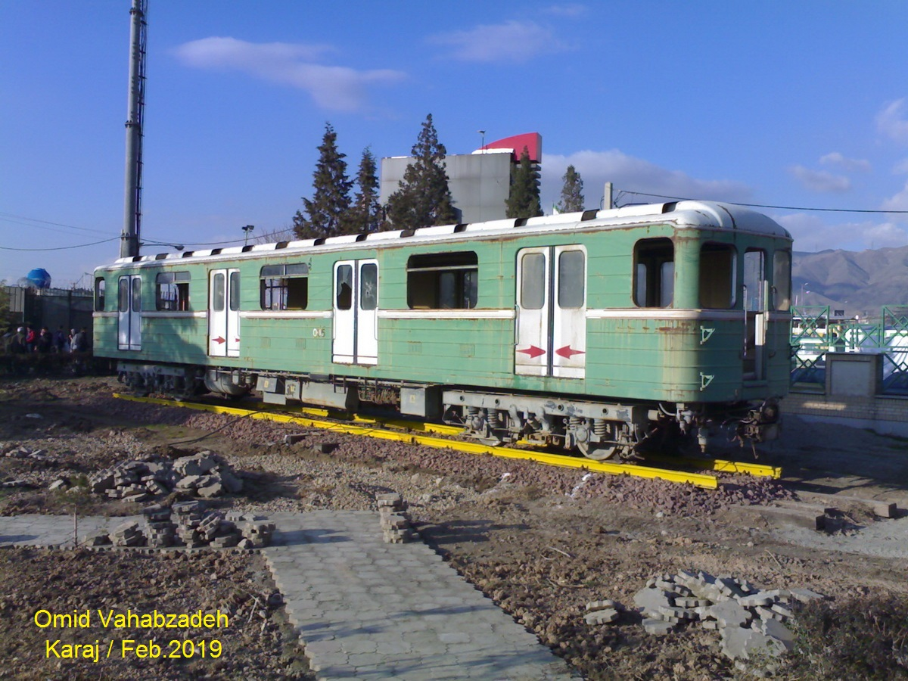
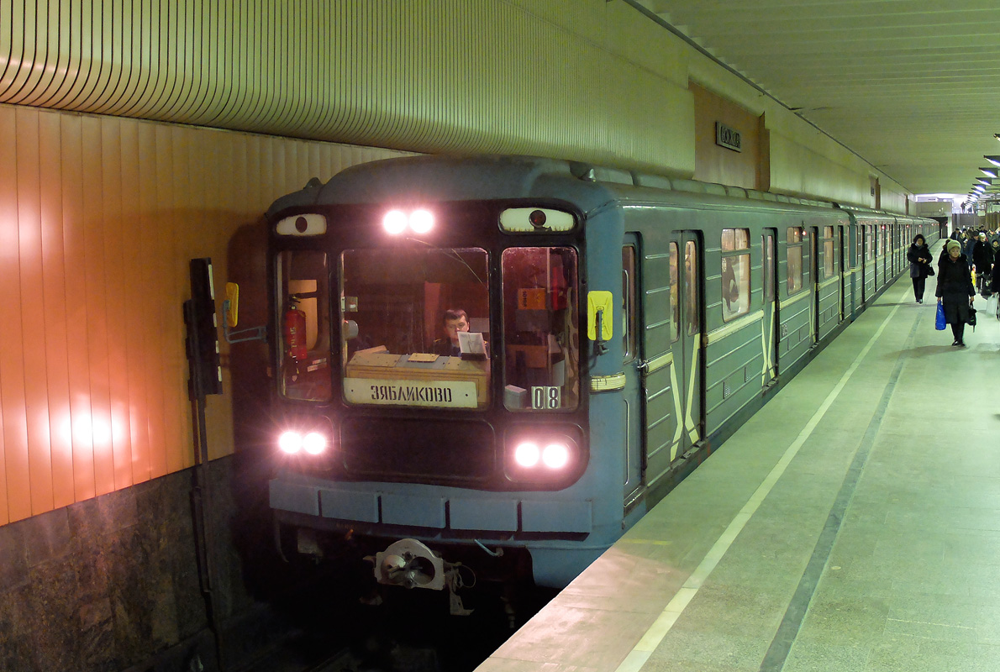
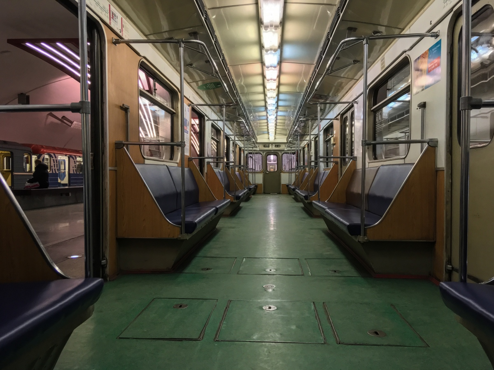
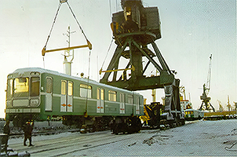
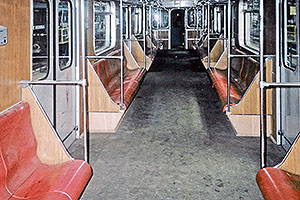

81-570/571
81-570/571 — модель вагонов, изначально предназначенная для Тегерана (Иран). Сборка началась осенью 1993 года на ЗАО «Вагонмаш». Большая часть состава в итоге отправилась в Москву. Состав изначально был полноценным, но позже разошёлся по Замоскворецкой и Люблинско-Дмитровской линиям.
История
Изготовление состава для Тегерана
На ЗАО «Вагонмаш» для строящегося Тегеранского метрополитена изготовлен состав из двух головных и шести промежуточных вагонов модели 81-570/571.
Отказ заказчика и простой
Из-за несогласования цен заказчик отказался от оплаты и приёмки вагонов. Состав длительно простаивал на предприятии как минимум до ноября 1994 года.
Продажа в Москву
Состав был перекрашен и продан ГУП «Московский метрополитен». Вагоны получили бортовые номера: №№ 10188–10189 (головные) и № 11317, №№ 11343–11347 (промежуточные). Начали работу на Люблинской линии.
Вторая поставка — для Тегерана
На заводе имени Егорова для Тегерана изготовлены 2 контактно-аккумуляторных электровоза типа 81-580, а также 2 головных и 4 промежуточных вагона метро. Испытания проходили на временных тележках российской колеи (1520 мм) на базе Петербургского метрополитена — сперва в депо «Автово», затем в депо «Невское».
Доставка в Тегеран морем
Вагоны доставлены в Тегеран морем. По пути следования часть метровагонов была повреждена. Для первого рейса в тегеранском метрополитене был собран состав из двух электровозов, двух головных и не менее одного промежуточного вагона. Известно как минимум об одном испытании со скоростью от 5 до 20 км/ч.
Отказ от эксплуатации и прототип 81-576
Среди причин отказа от эксплуатации вагонов в тоннелях тегеранского метро называют несоответствие фактических габаритов приближения строения тоннелей к заявленным. В пользу этого говорит постройка в 1996 году на ЗАО «Вагонмаш» фрагмента лицевой части головного вагона мод. 81-570 (в одном из источников — 81-576) с усечённой по бокам крышей. Из-за потери интереса со стороны Тегерана дальнейшие проработки были свёрнуты, а фрагмент кузова утилизирован.
Замена сидений в Москве
Жёсткие пластиковые сиденья, предназначавшиеся для тегеранского метро, в электродепо «Печатники» были заменены на стандартные дерматиновые диваны.
Первые снимки из Тегерана
Появились снимки жителей Тегерана, запечатлевшие характерные кузова метро российского производства на улицах города. На снимки попали три вагона: головной 006 и промежуточные 004 и 005. Судя по состоянию, вагоны давно не эксплуатировались и были проданы частным лицам для использования в качестве коммерческих помещений. Из вагона №005 сделали уличное кафе.
Сплотка в депо «Кередж»
Появилось свидетельство, подтверждённое фотоснимком, что все российские вагоны выставлены одной сплоткой на недействующий путь электродепо «Кередж».
Вагоны в Московском метро
Вагоны модели 81-570/571, распределённые по депо Московского метрополитена:
| Бортовой номер | Тип | Депо | Линия |
|---|---|---|---|
| 10188 | Головной | ТЧ-15 | ЛДЛ |
| 10189 | Головной | ТЧ-15 | ЛДЛ |
| 11317 | Промежуточный | ТЧ-19 | ЛДЛ |
| 11343 | Промежуточный | ТЧ-19 | ЛДЛ |
| 11344 | Промежуточный | ТЧ-15 | ЛДЛ |
| 11345 | Промежуточный | ТЧ-15 | ЛДЛ |
| 11346 | Промежуточный | ТЧ-17 | ЗЛ |
| 11347 | Промежуточный | ТЧ-17 | ЗЛ |
Всего в Москве: 8 вагонов (2 головных, 6 промежуточных)
Распределение: ТЧ-15 (4 вагона), ТЧ-19 (2 вагона), ТЧ-17 (2 вагона)
Вагоны в Тегеране
Несколько вагонов всё же дошли до Тегерана. Их судьба складывалась по-разному:
Нумерация
81-570 (головные)
001 и 006
81-571 (промежуточные)
002–005
Судьба вагонов
🚫 Не эксплуатируются
Из-за несоответствия габаритам тоннелей вагоны не эксплуатировались в тегеранской подземке.
🏪 Коммерческие помещения
Вагоны 004, 005 и 006 были проданы частным лицам. Из вагона №005 сделали уличное кафе. Они находятся вблизи станций «Karaj», «Sadeghiyeh» и «Gholshahr».
🚂 Сплотка в депо «Кередж» (2025)
По состоянию на 2025 год все российские вагоны выставлены одной сплоткой на недействующий путь электродепо «Кередж».
⚠️ Важно: В Тегеране вагоны не эксплуатируются — они либо разбросаны по городу в качестве коммерческих помещений, либо выставлены сплоткой в депо «Кередж».
Отличия и особенности
Уникальная судьба
Вагоны, предназначенные для Тегерана, оказались в Московском метро. Это редкий случай перенаправления подвижного состава.
Пластиковые сиденья
Изначально вагоны комплектовались жёсткими пластиковыми сиденьями, предназначавшимися для тегеранского метро. В 1997 году в ТЧ «Печатники» их заменили на стандартные дерматиновые диваны. Старые сиденья до сих пор используются в качестве скамеек на территории ТЧ-15 «Печатники».
Светлая крыша
Крыша вагонов была заметно светлее основного тона кузова — по всей видимости, вагоны перекрашивали поверх прежней эмали, и более светлый цвет дала белая крыша оригинала.
Белые матовые стёкла
Верхние габаритные огни были сохранены в обводах белых матовых стёкол, оставшихся также по наследству от первого заказчика.
Интерьер 1993 года
Интерьеры вагонов были отделаны свойственным тому периоду (1993 год) слоистым пластиком тёмно-коричневого оттенка. Поверхности дверей, рундуки и пульт машиниста были выкрашены бежево-розовой краской.
Надписи на пульте
Обозначения на пульте машиниста были нанесены на английском языке и фарси.
Брендированные вагоны
На данный момент часть вагонов брендированные. Лишь 1 вагон сохранил зелёный цвет и оригинальные диваны.
Возврат старого вида
Один машинист ТЧ-15 «Печатники» вернул старый вид головному вагону 10188, окрасив подложки габаритных огней в белый цвет.
⚡ Сегодня в Московском метро остался только один вагон в оригинальной зелёной окраске с диванами — уникальный экземпляр, напоминающий о несостоявшейся поездке в Тегеран.
Фотогалерея

Вагон № 005 (Тегеран)
Списанный вагон №005 в Тегеране.

Вагон №10189 в Московском метро.

Вагон №11347 в Московском метро.

Погрузка вагонов в Большом морском порту Санкт-Петербурга. 1995 год.

Салон промежуточного вагона модели 81-571 с сидениями для Тегерана.
Нажмите на фото для увеличения
«81-570/571 — уникальная история вагонов, которые должны были уехать в Тегеран, но остались в Москве. Сегодня только один вагон напоминает об их иранском предназначении — зелёный, с диванами, хранящий память о несостоявшейся поездке».